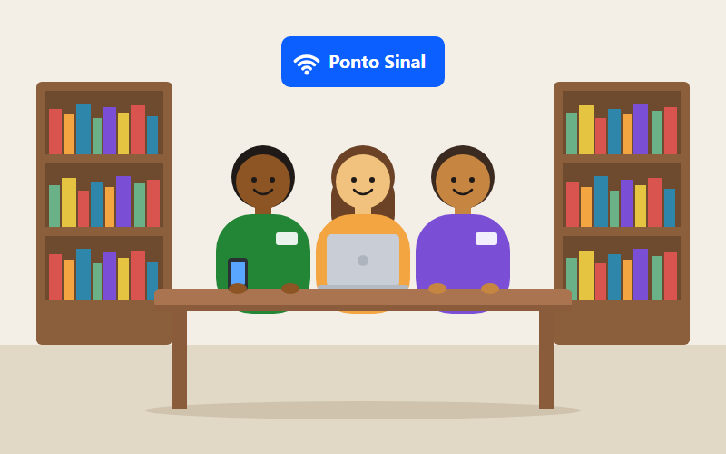

Tecnologia offline-first para jovens da periferia
O Sinal Aberto é uma trilha de qualificação em programação que funciona sem depender de internet contínua, franquia de dados alta ou computador — porque a exclusão digital não é falta de vontade, é falta de projeto pensado para a realidade de quem tem pouco.
Até 50 MB por mês é o consumo médio de dados de cada aluno.
Sem computador: o código roda e é corrigido no próprio celular.

Quem somos
Somos uma associação sem fins lucrativos que desenvolve tecnologia social para jovens de 16 a 24 anos das classes C, D e E, moradores de periferias urbanas e municípios de pequeno porte, sem computador próprio e com acesso à internet apenas pelo celular.
O desafio que enfrentamos
A desigualdade digital no Brasil não é mais ausência de conexão: é conectividade sem autonomia. Atuamos sobre três camadas do problema.
Acesso material
Conexão intermitente, aparelho de entrada e franquia de dados limitada.
Habilidades digitais
Domínio do consumo de conteúdo, mas pouca prática de produção e raciocínio computacional.
Retorno econômico
Mesmo acesso, benefícios muito diferentes conforme o capital cultural e a rede de apoio do jovem.
Como funciona o Sinal Aberto
Um aplicativo leve, offline-first, com camadas que garantem estudo mesmo sem sinal.
Conteúdo empacotado
Módulos de texto e código baixados de uma vez, com peso declarado antes do download.
Execução local
O código roda e é corrigido no próprio celular, sem depender de servidor.
Mediação assíncrona
Dúvidas enfileiradas offline e respondidas por mentores voluntários quando há rede.
Nosso impacto em números
-
30%
Meta de conclusão da trilha entre jovens de franquia limitada
-
50 MB
Consumo médio de dados por aluno ao mês
-
90%
Dos concluintes com portfólio público verificável
Como você pode ajudar
Doadores financiam Pontos Sinal e bolsas de mentoria. Voluntários atuam como mentores assíncronos. Cadastre-se e faça parte dessa rede.
Fale com a gente
E-mail
contato@sinalaberto.org.br
Telefone/WhatsApp
(41) 99999-0000
Endereço
Rua das Palmeiras, 120 — Curitiba, PR